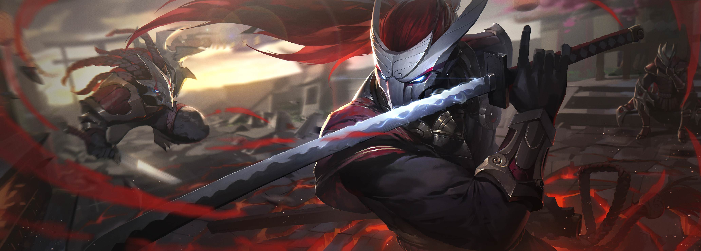
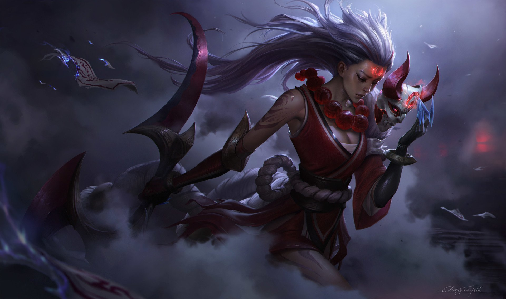

Yasuo is an agile swordsman who wields the air itself against his enemies. As a proud young man, he was falsely accused of murdering his master—unable to prove his innocence, he was forced to slay his own brother in self defense. Even after his master’s true killer was revealed, Yasuo still could not forgive himself for all he had done, and now wanders his homeland with only the wind to guide his blade.
Diana fights as a warrior of the Lunari—a faith all but quashed in the lands around Mount Targon. Clad in shimmering armor the color of winter snow at night, she is a living embodiment of the silver moon’s power. Imbued with the essence of an Aspect from beyond Targon’s towering summit, Diana is no longer wholly human, and struggles to understand her power and purpose in this world.
